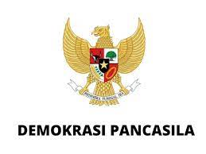

1. MAKNA DEMOKRASI PANCASILA 2. TUJUAN DEMOKRASI PANCASILA 3. ASPEK PADA DEMOKRASI PANCASILA 4. LANDASAN POKOK DEMOKRASI PANCASILA 5. 2 SISI DALAM DEMOKRASI PANCASILA

Demokrasi pancasila merupakan bentuk pemerintahan yang didasarkan pada kedaulatan rakyat yang dipandu oleh
kebijaksanaan dalam musyawarah atau melalui perwakilan, dengan prinsip-prinsip ketuhanan, kemanusiaan yang
adil dan beradab. Tujuannya adalah untuk menyatukan bangsa Indonesia dan mencapai keadilan sosial bagi semua
warganya.
Oleh karena itu, implementasi demokrasi di Indonesia tidak dapat dipisahkan dari Pancasila sebagai landasan
negara. Setiap sila dalam Pancasila memiliki posisi yang setara dan sejajar, sehingga hubungan antar-sila
tersebut membentuk satu kesatuan.
Pancasila memainkan peran penting dalam ranah politik, sosial, dan ekonomi, serta dalam penyelesaian isu-isu
nasional melalui musyawarah untuk mencapai kesepakatan. Hal ini merupakan manifestasi dari esensi demokrasi
Pancasila itu sendiri.
✿ Memfasilitasi pemerintah untuk memahami proses pengambilan keputusan dalam menangani suatu permasalahan dengan
menerapkan prinsip-prinsip demokrasi Pancasila.
✿ Agar seluruh sektor pemerintahan di Indonesia beraktivitas sesuai dengan fondasi negara ini.
✿ Menjadi jaminan bahwa pemerintah negara ini benar-benar memikul tanggung jawab penuh terhadap tugasnya dan
juga terhadap kepentingan rakyat.
✿ Menjamin bahwa sistem hukum di negara ini dihormati dan dijalankan dengan benar sesuai dengan ketentuan yang berlaku.
✿ Menjamin partisipasi aktif seluruh warga negara Indonesia dalam kehidupan berbangsa dan bernegara, termasuk
berpartisipasi dalam proses pemilihan umum dengan menggunakan hak pilihnya.

❊ Aspek Material
Meliputi inti dan substansi. Bagian ini menguraikan pengakuan terhadap nilai dan kedudukan manusia. Demokrasi Pancasila
mencakup tidak hanya aspek politik, melainkan juga aspek ekonomi dan sosial.
❊ Aspek Formal
Ini menguraikan mengenai langkah-langkah dan metode di mana masyarakat memilih perwakilan dalam badan legislatif.
Mengatur proses perundingan wakil rakyat secara bebas, transparan, dan adil. Demokrasi Pancasila mengadopsi
pendekatan musyawarah sebagai sarana untuk mencapai kesepakatan dalam pengambilan keputusan.
❊ Indonesia merupakan negara yang berdasarkan hukum
❊ Negara Indonesia menganut sistem konstitusional
❊ Presiden merupakan penyelenggara pemerintah tertinggi
dibawah MPR
❊ Kekuasaan Kepala Negara tidak tak terbatas
❊ Menteri negara merupakan pembantu presiden dan tidak
bertanggung jawab pada DPR
Pertama-tama, adanya Demokrasi Pancasila tersebut berarti akan adanya sisi negatif dan juga positifnya. Sisi positif yang kami
bisa ambil dari demokrasi Pancasila tersebut adalah demokrasi tersebut selalu menjunjung tinggi hak asasi manusia (HAM).
Melalui demokrasi Pancasila, HAM akan ditegakkan dengan tinggi, mengurangi kemungkinan tindakan kejahatan manusia.
Penghargaan yang tinggi terhadap HAM akan membawa keadaan damai dalam kehidupan bersama dan saling menghargai satu sama lain.
Selain HAM, mereka juga menjunjung tinggi hukum yang berlaku. Mereka mengimplementasikan peraturan hukum memiliki
peranan vital dalam mencegah perilaku sewenang-wenang oleh anggota masyarakat. Dalam kerangka demokrasi Pancasila,
setiap peraturan hukum dihargai dan diterapkan secara adil, sehingga individu yang melanggar hukum akan mendapatkan
sanksi hukum yang seimbang. Lalu, kepentingan mereka juga untuk menjaga persatuan dan kesatuan, serta kepentingan rakyat sekitar.
Persatuan dan kesatuan ini telah dijaga secara cermat untuk mencegah konflik yang berkepanjangan. Selain itu, keberadaan persatuan dan
kesatuan dapat menciptakan lingkungan masyarakat yang lebih aman dan damai
Selanjutnya, ada sisi negatifnya yang berupa batasan demokrasi. Walaupun diberi label sebagai sistem demokrasi, Orde Lama
menghadapi kelemahan dalam pelaksanaan demokrasi yang sejati. Partai Golongan Karya (Golkar) menjadi satu-satunya partai
politik yang diakui, sehingga pluralisme politik menjadi terbatas. Tidak sampai situ, tetapi adanya juga pelanggaran hak
asasi manusia (HAM). Selama masa Orde Lama, tercatat pelanggaran hak asasi manusia yang signifikan, terutama terkait
dengan keamanan dan upaya pemberantasan pemberontakan. Pembatasan kebebasan sipil dan hak-hak politik juga menjadi
permasalahan yang muncul.
6. PENERAPAN DEMOKRASI PANCASILA 7. CIRI-CIRI DEMOKRASI PANCASILA
✿ Pemilihan Umum :
Sebagai salah satu elemen krusial dalam Demokrasi Pancasila, pemilihan umum di
Indonesia dijalankan dengan prinsip demokratis. Dilaksanakan secara rutin, pemilihan umum ini bertujuan
untuk memilih para anggota parlemen, presiden, gubernur, bupati/wali kota, dan pejabat tingkat daerah
lainnya. Melalui proses ini, masyarakat diberikan peluang untuk aktif berpartisipasi dalam dinamika
politik dan menentukan pemimpin mereka sendiri.
✿ Sistem Ketatanegaraan:
Dasar sistem politik Indonesia adalah prinsip Demokrasi Pancasila, yang
mengakui negara Indonesia sebagai negara demokrasi yang berlandaskan pada kedaulatan rakyat. Pemerintahan
diatur berdasarkan prinsip pembagian kekuasaan antara lembaga legislatif, eksekutif, dan yudikatif.
Prinsip-prinsip Pancasila juga terwujud dalam bentuk undang-undang dan kebijakan negara.
✿ Partai Politik :
Dalam konteks Demokrasi Pancasila di Indonesia, peran partai politik sangat
signifikan. Regulasi undang-undang mengatur keberadaan partai politik di Indonesia, yang memiliki fungsi
memengaruhi kebijakan publik, mencalonkan pemimpin, dan menjadi sarana partisipasi politik bagi masyarakat.
Harapannya, partai politik dapat mempromosikan serta menerapkan nilai-nilai Pancasila dalam jalur kegiatan
politik mereka.
✿ Mekanisme Konsultasi Publik :
Demokrasi Pancasila mendorong partisipasi aktif masyarakat
dalam pengambilan keputusan. Mekanisme konsultasi publik seperti musyawarah masyarakat, forum diskusi,
dan rapat umum diadakan untuk menghimpun pendapat dan aspirasi masyarakat dalam berbagai isu kebijakan
publik. Hal ini memungkinkan warga negara untuk berkontribusi dalam proses pengambilan keputusan yang
lebih inklusif.
✿ Perlindungan Hak Asasi Manusia :
Dalam konteks Demokrasi Pancasila di Indonesia, perhatian khusus
diberikan pada perlindungan hak asasi manusia. Prinsip keadilan sosial bagi seluruh rakyat Indonesia
yang terkandung dalam Pancasila menekankan urgensi menghormati serta melindungi hak-hak dasar setiap
individu. Untuk mewujudkannya, berbagai undang-undang dan lembaga terkait didirikan dengan tujuan
menegakkan dan mempromosikan hak asasi manusia di Indonesia.